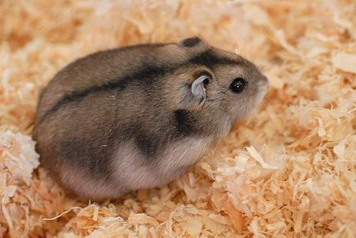
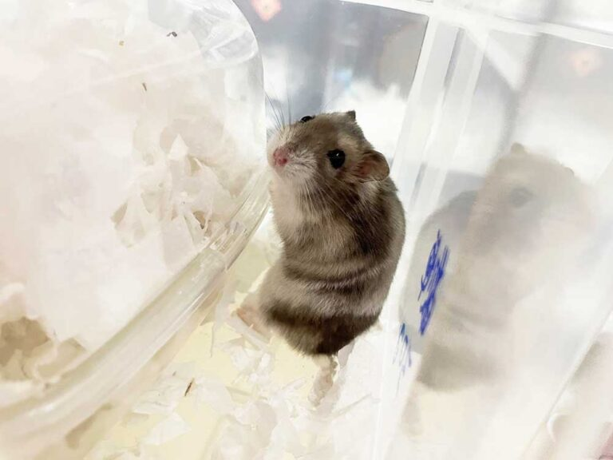
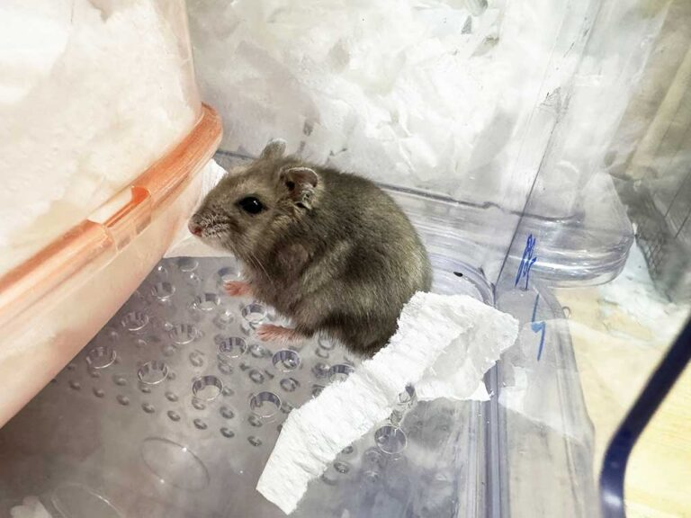
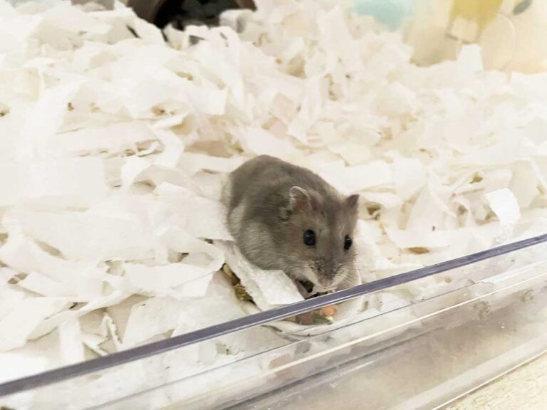
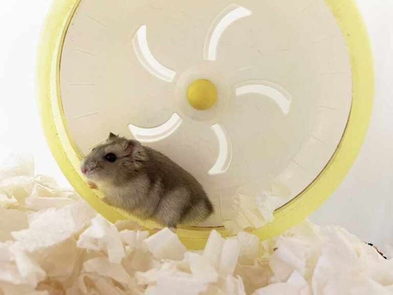
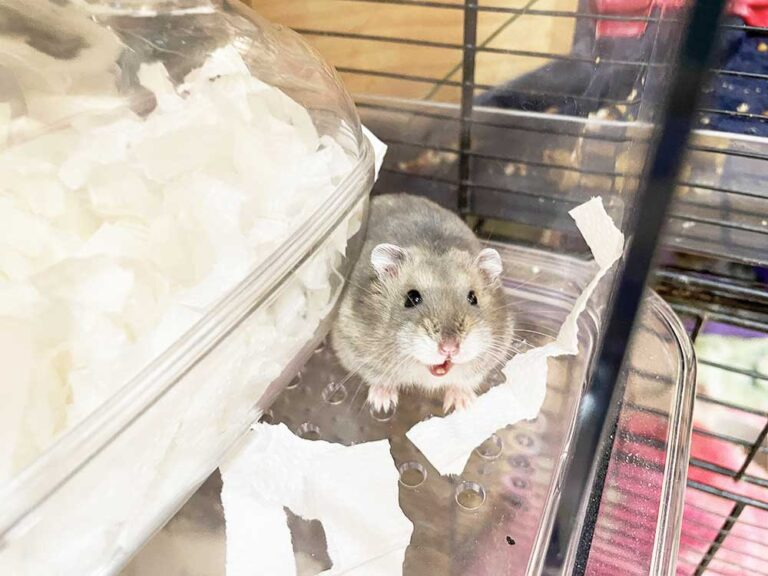
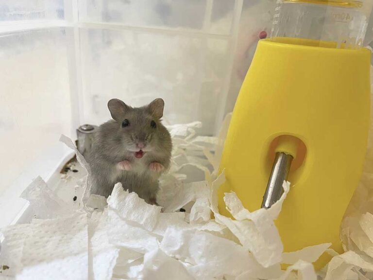

加卡利亞倉鼠
Djungarian hamster
俗稱
三線鼠、短尾侏儒倉鼠、西伯利亞倉鼠、冬白倉鼠、楓葉鼠
身長
7.6~10公分
壽命
1.5~2.5年
原生地
西伯利亞賽米巴拉金斯克西部、新疆

Djungarian hamster
三線鼠、短尾侏儒倉鼠、西伯利亞倉鼠、冬白倉鼠、楓葉鼠
7.6~10公分
1.5~2.5年
西伯利亞賽米巴拉金斯克西部、新疆
經過訓養可能變得十分親人，毛色常隨季節交替而轉變
他們不太喜歡其他鼠，不應將相互不認識的三線鼠放在一起
典型的暗灰色背部條紋跟毛絨的腳，尾巴相當的短以至於他們坐下後難以看見尾巴
較為單調，均為不同程度的灰色。原始色（灰黑色）、珍珠色和藍寶石色是三種最為常見的毛色
在冬天毛色可以轉變成幾乎全白（冬白現象），這是因為冬季缺乏日曬導致被毛轉變遷，幾乎全白的毛色幫助他們在雪覆蓋下的冬季俄羅斯大草原躲過掠食者的捕食





